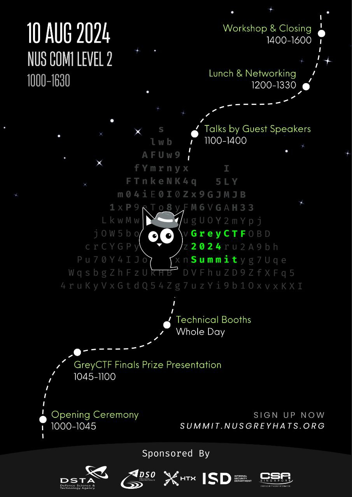

~ summary GreyCTF summit is a mini Cybersecurity conference consisting of technical talks, workshops and insightful industry-related booths to share more about the industry!~ objective Our objective for the summit is to provide a platform for students to explore their interest in cybersecurity, providing them with opportunities to connect and learn from industry professionals to find out what the industry is like.~ registration The event will run from 10:00AM to 04:30PM on 10th August. Lunch will be provided and lots of epic merchandise to be won. Limited slots available, sign up here today!~ event information  < go back